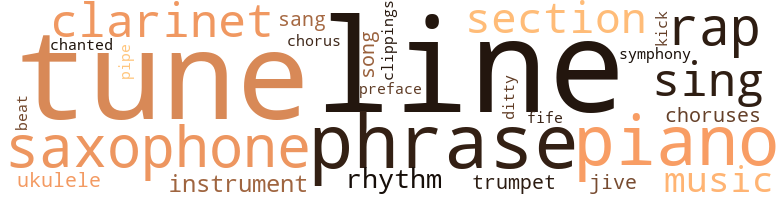
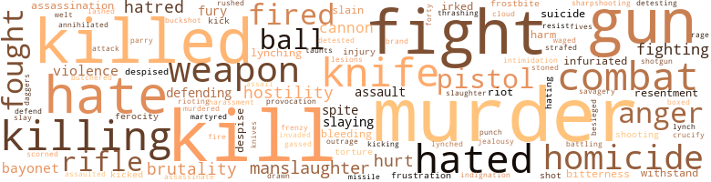

One By One, by Webster, Bill (1972)
92 music-related terms matched in this text.
Most frequent terms in this topic: line (11); tune (8); piano (7); saxophone (6); rap (5)
chorus.n.01
Definition: any utterance produced simultaneously by a group
| word | sentence |
|---|---|
| choruses | They blew about eight choruses and took it out . |
| chorus | He blew one chorus . |
| choruses | He blew four hard choruses , making the saxophone screech and squeal à la Earl Bostic . |
clarinet.n.01
Definition: a single-reed instrument with a straight tube
| word | sentence |
|---|---|
| clarinet | Mr. Ausenbaum , the band director , gave out clarinet scores for a number called " Polka the Peony , " a very fast fantasy with varia - tions , and said that the best performer on clarinet would repre - sent the school in the competition at State College . |
| clarinet | Mr. Ausenbaum , the band director , gave out clarinet scores for a number called " Polka the Peony , " a very fast fantasy with varia - tions , and said that the best performer on clarinet would repre - sent the school in the competition at State College . |
| clarinet | He had only been playing clarinet about a year and a half , and rejected the manuscript because he did n't feel good enough to compete with other students , some of whom had been playing for four or five years . |
| clarinet | " I left my clarinet at home , " he said . |
clipping.n.01
Definition: an excerpt cut from a newspaper or magazine
| word | sentence |
|---|---|
| clippings | There were sev - eral newspaper clippings on Peel and a " make " sheet developed by the Bay City Police Department . |
cornet.n.01
Definition: a brass musical instrument with a brilliant tone; has a narrow tube and a flared bell and is played by means of valves
| word | sentence |
|---|---|
| trumpet | One of them , the trumpet player , seemed vaguely familiar . |
| trumpet | Suddenly he placed the trumpet player . |
ditty.n.01
Definition: a short simple song (or the words of a poem intended to be sung)
| word | sentence |
|---|---|
| ditty | Backstage he went through a little ditty that he and Fats Emory had played at the Apex Club , a tune called " Billies Bounce . " |
fife.n.01
Definition: a small high-pitched flute similar to a piccolo; has a shrill tone and is used chiefly to accompany drums in a marching band
| word | sentence |
|---|---|
| fife | After seeing the pictures , Waddell felt that Weinstein had pur - posefully stolen his trump card : the unwavering fervor of a black man attesting to the non-existence of extenuating circumstances in Peel 's fife . |
foreword.n.01
Definition: a short introductory essay preceding the text of a book
| word | sentence |
|---|---|
| preface | As Klokkevold made his entry , Waddell wondered whether he would preface proceedings with an admonition . |
jive.v.01
Definition: dance to jive music; dance the jive
| word | sentence |
|---|---|
| jive | This broad here do n't under - stand ' bout how bloods shuck and jive . " |
| jive | " Well , ah 'm jes ' hung up heah in this League tiling now , V - " " Do n't shuck and jive me , Merrill . |
kick.v.04
Definition: kick a leg up
| word | sentence |
|---|---|
| kick | Now , he felt diametrically opposed to a social set which had nothing to lose ; people who would gouge , kick , cut , claw , bomb and do anything necessary to win a minor point . |
music.n.01
Definition: an artistic form of auditory communication incorporating instrumental or vocal tones in a structured and continuous manner
| word | sentence |
|---|---|
| music | He did n't particularly like the atmosphere in most of the officers ' clubs he 'd been in , but he loved music and occasionally he 'd run into some musician he knew . |
| music | He decided to take a table and sit and enjoy the music for a while . |
| music | Just like bitches , just like this Ida , this music freak , who thought there was something superhuman about the way Negroes played jazz . |
| Music | Music is definitely one area where there are differences . " |
musical_instrument.n.01
Definition: any of various devices or contrivances that can be used to produce musical tones or sounds
| word | sentence |
|---|---|
| instrument | Maybe , just maybe someday he would be an instrument of that law , and it helped to know that it could be just and fair to all . |
| instrument | Willie spoke in hushed tones about Mr. Elijah Muhammad , saying that Mr. Muhammad was a divine instrument of Allah , sent to deliver black people from the clutches of the " blue - eyed devils . " |
| instrument | That legal system , though wavering in implementation at times , is the major instrument - the only real one that any ethnic or racial group has - for redress , and its integrity must be maintained . " |
phrase.n.02
Definition: a short musical passage
| word | sentence |
|---|---|
| phrases | " You will please sit , " the guard said in the precise way people speak when they only know a handful of stock phrases of English . |
| phrases | The doctor , bandaging the ankle , turned and muttered a few unintelligible phrases to an aide and the aide left . |
| phrases | The door guard took over custody of him by barking a few clipped phrases to the guard who brought him in , and the young guard departed hurriedly . |
| phrases | At times Waddell had heard him mutter unintelligible phrases about breaking out and hitchhiking back to Owatonna . |
| phrase | I think it 's incumbent on you to phrase your question properly . " |
| phrase | " You come home creepin ' in the morning , and you think everybody 's asleep , " He decided to blow an answering phrase for every phrase that she sang . |
| phrase | " You come home creepin ' in the morning , and you think everybody 's asleep , " He decided to blow an answering phrase for every phrase that she sang . |
| phrases | Certainly there was a difference in the way black and white cats blew their phrases and their choice of notes , but it seemed to bo based on the kinds of sounds they had heard in their lifetimes and not on intrinsic disparities . |
piano.n.01
Definition: a keyboard instrument that is played by depressing keys that cause hammers to strike tuned strings and produce sounds
| word | sentence |
|---|---|
| piano | The practice sessions , with her piano , accompaniment , began and continued every Saturday and Sunday for six or seven weekends . |
| piano | " Yeah , man , 'n' look ovah theah at th ' piano , man , " another one of the militants , a huge man , said . |
| piano | He promptly got up and went over to the piano and started pecking out a tune . |
| piano | Calmly he walked over to where the big gorilla sat playing the piano and placed the barrel of the forty-five against the man 's temple . |
| piano | " I do n't remember giving you permission to play my fuckin ' piano , " he said . |
| piano | " Well , tell this fat-ass motherfucker to get away from my piano . |
| piano | I worked for what I have , and goddammit , when some dude sits his ass at my piano , he 'll do so because I invite him . " |
pipe.n.04
Definition: a tubular wind instrument
| word | sentence |
|---|---|
| pipe | He looked up and , to his left , there seemed to be a faint glimmer of light which could be caused by a crooked pipe that supplied the box with air . |
rap.n.05
Definition: genre of African-American music of the 1980s and 1990s in which rhyming lyrics are chanted to a musical accompaniment; several forms of rap have emerged
| word | sentence |
|---|---|
| rap | He could rap with all that Fillmore talk until Ben got to the point where he wanted to fire on him . |
| rap | Jes ' wanta have a rap session wid ' yo ' . " |
| rap | The judge , seemingly dum - founded , could only stare and slowly rap his gavel . |
| rap | Again , there was a surprised murmur from the gallery , loud enough to cause Klokkevold to rap his gavel and de - mand order . |
| rap | I protest that - " " Sustained , " Klokkevold repeated , glaring at Weinstein and rap - ping his gavel . |
rhythm.n.01
Definition: the basic rhythmic unit in a piece of music
| word | sentence |
|---|---|
| beat | " Well , I was on my beat , which is between the Bay and Quentin on the east and west , and Forty-fifth and Fifty-fifth on the north and south . |
rhythm.n.04
Definition: the arrangement of spoken words alternating stressed and unstressed elements
| word | sentence |
|---|---|
| rhythm | The frogs croaked endlessly , and he imagined that the rhythm of the distant pump , which supplied the canal with water , said , " Bay-Bay 's a ghost now , Bay-Bay 's a ghost now . |
| rhythm | Without an answer , Floyd launched into an easy bouncy rhythm , at a tempo perfect for " Robbins Nest . " |
| rhythm | He looked over at some tables to his left and some GIs were up , clapping their hands to the rhythm set by the drums and bass . |
| rhythm | There 's a certain rhythm to their lives , a pulse which makes some other people seem dull by comparison . |
sax.n.02
Definition: a single-reed woodwind with a conical bore
| word | sentence |
|---|---|
| saxophone | He had switched from saxophone to trumpet and kept playing . |
| saxophone | A fat , red-faced organist , hunched over the keyboard , was laying fat chords to sup - port the improvisation of the saxophone player . |
| saxophone | Floyd started the introduction to a fast blues and Ben realized that his dexterity on the saxophone was returning rapidly . |
| saxophone | The saxophone was similar to the one he owned . |
| saxophone | He blew four hard choruses , making the saxophone screech and squeal à la Earl Bostic . |
| saxophone | A magazine like this reinforced the grand illusion for Negroes , holding up as exemplary the success story of a saxophone player , a one in ten million long shot . |
section.n.01
Definition: a self-contained part of a larger composition (written or musical)
| word | sentence |
|---|---|
| section | They had come to a hilly portion now ; a section of Korea that seemed to have an infinite number of scrubby hills . |
| section | The larger compound , for enlisted men , was about the size of a one - block-square school play yard , but the officers ' compound was the size of a double city lot , and was separated from the enlisted men 's section by a barbed-wire fence . |
| section | It was located in the southern section of Bay City , the section populated by Negroes and hip types . |
| section | It was located in the southern section of Bay City , the section populated by Negroes and hip types . |
sing.v.02
Definition: produce tones with the voice
| word | sentence |
|---|---|
| sing | " Miss Schoenfeld , I think this is a mistake , " Miss Wickersham re - sponded with a tight-lipped , middle-class warning , with sing - song emphasis on the word " mistake . " |
| sing | As he started his prosecution summation , the jury , dressed in bloodstained black choir robes , stood and began to sing , " Guilty as charged . " |
| sang | " You come home creepin ' in the morning , and you think everybody 's asleep , " He decided to blow an answering phrase for every phrase that she sang . |
| sing | Damn , he thought , this bitch can sing . |
| sang | " You find him sittin ' staring at you with his eyes wide open , Tears runnin ' down his cheek " She sang two other tunes , " Imagination " and " The Way You Look Tonight " and the set was over . |
| sing | " Bullshit , " he said abruptly ; " what 's wrong with the way you sing now ? " |
song.n.01
Definition: a short musical composition with words
| word | sentence |
|---|---|
| song | " Miss Schoenfeld , I think this is a mistake , " Miss Wickersham re - sponded with a tight-lipped , middle-class warning , with sing - song emphasis on the word " mistake . " |
| song | He ordered another drink as the band went into " Intermission Riff , " their " break " song . |
symphony.n.01
Definition: a long and complex sonata for symphony orchestra
| word | sentence |
|---|---|
| symphony | It was horrible , like a staccato symphony played in hell , like that fleeting moment of impact in a serious automobile accident ; horrible enough to be unbelievable . |
tone.v.01
Definition: utter monotonously and repetitively and rhythmically
| word | sentence |
|---|---|
| chanted | He turned from the jury to the judge , Peel Sr. , hangman 's noose still around his neck , who chanted sadly , " Innocent , innocent . " |
tune.n.01
Definition: a succession of notes forming a distinctive sequence
| word | sentence |
|---|---|
| line | Them ' Buffalo ' soldiers from the 24th Regiment would stand in line . |
| tune | Do n't tell me what tune I have to play . |
| tune | He promptly got up and went over to the piano and started pecking out a tune . |
| line | Waddell admired this line of questioning , but noticed that Klokkevold occasionally looked at him expectantly , seemingly looking for a well-placed objection . |
| line | In Bay City , I mean , " Weinstein asked , and Waddell wondered what his line of questioning related to . |
| line | There was a pause , and Weinstein seemed stumped as to how to continue his line of questioning of Miss Hagard . |
| line | " Mr. Weinstein is deviating from a line of questioning relevant to show cause . " |
| line | " Your honor , " he said , " I pursued this line of questioning in or - der to show the polarity of black thinking as regards their leader - ship , and I submit that Miss Hagard has clearly displayed her disapproval of black militancy . |
| line | You let him deviate from a line of relevant questioning of the man , getting off into an attack on the John Birch Society . |
| line | The District Attorney continued , " I would n't worry about his show - ing cause , but keep him on the proper questioning line . |
| line | Back stateside , people were fed that line about freedom of choice , free enterprise , freedom of this , freedom of that , but when it got down to the nitty-gritty , a handful of Madison Avenue types were making decisions about the life-styles of ninety-nine per cent of the American people : decisions about what they would eat and wear , where they would go and how even more money could be made from these synthetically generated choices . |
| tune | Backstage he went through a little ditty that he and Fats Emory had played at the Apex Club , a tune called " Billies Bounce . " |
| tune | The tune was at a furious tempo and Waddell could sense the effects of having laid off for a long time . |
| tunes | " You find him sittin ' staring at you with his eyes wide open , Tears runnin ' down his cheek " She sang two other tunes , " Imagination " and " The Way You Look Tonight " and the set was over . |
| line | " Well , I do n't see anything wrong with the prosecution 's line of questioning , Mr. Weinstein . |
| line | Waddell wondered about his line of attack , feeling himself lose control of the case . |
| tune | On the way , in the taxi , she had talked about how she dug his playing and how she found that black guys seemed to get into a tune more heavily than gray cats . |
| tune | " Cherokee " was the tune . |
| tune | Cats back in San Francisco used to use the tune " Cherokee " to test a musician , whether a cat could really blow or not . |
| tune | The next tune was a blues called " Tilings Ai n't What They Used to Be . " |
| tunes | No sweat , this was one of Duke 's tunes ; it grooved natu - rally . |
uke.n.01
Definition: a small guitar having four strings
| word | sentence |
|---|---|
| ukulele | One pilot was sit - ting on his bunk strumming a ukulele , the other was writing a letter . |
| Ukulele | Ukulele continued , " By golly , why do n't yo ' jes ' say col - ored ' ? |
499 violence-related terms matched in this text.
Most frequent terms in this topic: murder (39); kill (32); killed (25); fight (23); gun (22)
aggravation.n.02
Definition: unfriendly behavior that causes anger or resentment
| word | sentence |
|---|---|
| provocation | Waddell had noticed him kneeling in prayer on several occasions and he habitually made the sign-of-the - cross gesture at the slightest provocation . |
anger.n.01
Definition: a strong emotion; a feeling that is oriented toward some real or supposed grievance
| word | sentence |
|---|---|
| anger | Waddell lowered the forty-five , sensing that the tension and anger had dissipated . |
| anger | His emotions bordered on anger ; anger that came from the realization that he had n't done most of the things he 'd planned to do . |
| anger | His emotions bordered on anger ; anger that came from the realization that he had n't done most of the things he 'd planned to do . |
| anger | I guess I hoped that the major would call in a fix on me so that Air Rescue could get me out , " Waddell said , with something of the old anger return - ing . |
| anger | Mabry walked out of the chambers and said to the men in the lobby , " You gentlemen can come back in now , " and Waddell felt anger welling up inside . |
| anger | Waddell 's anger rose in him ; he had heard of lynchings before , but these were the first photographs he had seen of one . |
| anger | " Weinstein says they 're . . . that the man is Vernon Peel , Sr. " He strained to control his anger . |
| anger | The brown water , moving swiftly , held the secret to his first encounter with death , and he felt an unreasoning momentary anger with its swiftness . |
| anger | Or was it done in a fit of anger , in a set of circumstances which precluded the ability to make a rational decision as to whether or not it was right under the laws of God and man ? |
assail.v.01
Definition: attack someone physically or emotionally
| word | sentence |
|---|---|
| assaulted | " Some kid assaulted Ben just outside the chambers , " Weinstein said . |
assassinate.v.01
Definition: murder; especially of socially prominent persons
| word | sentence |
|---|---|
| assassinate | Waddell asked , uncertain as to how to assassinate the man 's character . |
attack.v.01
Definition: launch an attack or assault on; begin hostilities or start warfare with
| word | sentence |
|---|---|
| assail | Would it be fair to assail Weinstein 's statements about his belonging to the black elite ? |
attack.v.02
Definition: attack in speech or writing
| word | sentence |
|---|---|
| attack | Now , I have to attack that thesis . |
battle.v.01
Definition: battle or contend against in or as if in a battle
| word | sentence |
|---|---|
| battling | He and Weinstein would be battling for men 's minds - the minds of the jurors , using two viewpoints which were opposed . |
bayonet.n.01
Definition: a knife that can be fixed to the end of a rifle and used as a weapon
| word | sentence |
|---|---|
| bayonet | As the little man edged out on the great limb toward him , he shut his eyes und waited for the tearing , sealing feeling of the bayonet knife entering his flesh . |
| bayonet | As the last shroud line was cut , Waddell dropped to the ground , unable to soften the fall , which was about eighteen feet Before he could regather himself on the ground , there was a bayonet pressed against his neck . |
| bayonet | When he came to , his guard was there , bayonet fixed , re-establish - ing their guard-prisoner relationship . |
| bayonet | The briars were bearable to him , especially when the alternate choice was a bayonet prod from a guard . |
| bayonet | Two Chinese guards walked in , one with a gun slung from a shoulder holster , the other with a fixed bayonet " Fly by your balls , boy , " Watuszak said . |
besiege.v.01
Definition: surround so as to force to give up
| word | sentence |
|---|---|
| besieged | Waddell was besieged by many confusing thoughts . |
bird_shot.n.01
Definition: small lead shot for shotgun shells
| word | sentence |
|---|---|
| buckshot | Its only problem in combat was that its twenty-millimeter cannon were just like buckshot : you had to be really close to be effective . |
bleeding.n.01
Definition: the flow of blood from a ruptured blood vessel
| word | sentence |
|---|---|
| bleeding | The little man , face battered and bleeding , crawled out and staggered away . |
| bleeding | He felt his mouth bleeding and wondered how many teeth he had left . |
| bleeding | There was a big welt on his shoulder where the whip had bitten , and the knuckles on his right hand were torn and bleeding , almost bared to the bone . |
box.v.03
Definition: engage in a boxing match
| word | sentence |
|---|---|
| boxed | For a moment he felt trapped , boxed in by his appearance , and that no matter how much ability he possessed , his achievement limits were set . |
bullying.n.01
Definition: the act of intimidating a weaker person to make them do something
| word | sentence |
|---|---|
| intimidation | Their strength to resist intimidation . " |
butcher.v.01
Definition: kill (animals) usually for food consumption
| word | sentence |
|---|---|
| butchered | " He saw his father hanged and butchered when he was five years old . |
cannon.n.04
Definition: heavy automatic gun fired from an airplane
| word | sentence |
|---|---|
| cannon | They had made him ground meat , cannon fod - der . |
| cannon | If that goddamn MIG had forty-fives instead of twenty-millimeter cannon , he thought , Simas would be a cooked goose . |
| cannon | The strategy was for one plane to try and stay just out of the range of those death-dealing twenty-millimeter cannon until a wingman could get a bead on the MIG with his equally deadly , greater-range forty-five-caliber machine guns . |
| cannon | Its only problem in combat was that its twenty-millimeter cannon were just like buckshot : you had to be really close to be effective . |
| cannon | His task now was to stay slightly out of range of the cannon , yet sort of titil - late the MIG to keep it from smelling a rat and slipping out of the action . |
| cannon | " Do you think that that error could be the reason your aircraft was hit , considering the short maximum effective range of twenty - millimeter cannon and the superior cruising capability of our air - craft ? |
character_assassination.n.01
Definition: an attack intended to ruin someone's reputation
| word | sentence |
|---|---|
| assassination | Although their uniforms had no insignia of any kind , this soldier seemed to be in charge of the capture or assassination operation . |
| assassination | He remembered briefly the assassination of President Kennedy , which had pointed up the fact that nothing is absolute ; even the life of a President could not be totally protected . |
| assassination | Will a decision like that give rise to a wave of police officer assassination ? " |
cloud.n.05
Definition: suspicion affecting your reputation
| word | sentence |
|---|---|
| cloud | The weather people had predicted good visibility in their area of coverage , but there was heavy cloud cover , so Simas peeled off into a cloud bank in order to get down to an altitude that afforded better visibility . |
contemn.v.01
Definition: look down on with disdain
| word | sentence |
|---|---|
| despised | Waddell despised Merrill , and felt an urge to ram his fist down his throat then and there . |
| scorned | He thought of those over there who had scorned him because of his blackness , but more importantly those who had seen him and treated him as a competent officer and pilot . |
| despise | For the first time , Waddell noticed that the commandant seemed to despise Lieutenant Yee ; that the senior officer knew Yee was a perverted sadist . |
| despise | " I despise your type as much as you despise mine , so if we 're gon na talk , keep it straight " " Okay , " she said , " I asked for that , but do n't yo ' see that theah was more than Vernon and th ' three policemen operating theah that night ? |
| despise | " I despise your type as much as you despise mine , so if we 're gon na talk , keep it straight " " Okay , " she said , " I asked for that , but do n't yo ' see that theah was more than Vernon and th ' three policemen operating theah that night ? |
| despised | How can I write off white people like Miss Schoenfeld , who helped me get on the right foot in school , or Colonel Reuter , my commanding officer in Korea who despised the red - necks as much as I did , or Mulcahy and Jemigan and the guys at Yang-Po ? |
craze.n.02
Definition: state of violent mental agitation
| word | sentence |
|---|---|
| frenzy | But he saw some of the frenzy leave the smaller boy 's face , and sensed that the worst was over . |
crucify.v.01
Definition: kill by nailing onto a cross
| word | sentence |
|---|---|
| crucify | If he does , I can crucify him , " Vagts said , surprising Waddell with his apparent relish of the prospect " Why does Herrin have to put him on the stand ? |
dagger.n.01
Definition: a short knife with a pointed blade used for piercing or stabbing
| word | sentence |
|---|---|
| daggers | As he sat waiting for Ida to finish her set and join him he looked around ; there were daggers in men 's eyes . |
defy.v.01
Definition: resist or confront with resistance
| word | sentence |
|---|---|
| withstand | There would be trials , personal trials with the commandant , but somehow he knew that the men would withstand them . |
| withstand | He started pissing on himself , and as he did , the ability of his body to withstand the pain in his middle finger appeared oddly to increase . |
| withstand | Waddell sensed Novotny 's feelings ; no matter where they were going , Novotny felt that he could withstand it . |
draw.v.23
Definition: pull (a person) apart with four horses tied to his extremities, so as to execute him
| word | sentence |
|---|---|
| drawn | " Papers will be drawn up pursuant to your decision for final approval by the Presi - dent of the United States . |
eliminate.v.03
Definition: kill in large numbers
| word | sentence |
|---|---|
| annihilated | " Yes , Mr. Waddell was bom in the Depression in the Deep South and watched his father whipped with a bullwhip by a white man , but his father all but annihilated the man later . |
engage.v.07
Definition: carry on (wars, battles, or campaigns)
| word | sentence |
|---|---|
| waged | He thought of the battle for mens ' minds waged by his Communist captors at Yang-Po . |
ferociousness.n.01
Definition: the trait of extreme cruelty
| word | sentence |
|---|---|
| brutality | Even young white kids are parroting this police brutality thing . |
| brutality | There was a savagery , an in - trinsic brutality about men that did not permit compassion in the absence of rigid laws governing their behavior . |
| brutality | Waddell knew that Weinstein would try to make the jury feel there had been police brutality if he possibly could . |
| brutality | As Waddell watched this , his feelings were mixed : he resented the brutality unleashed by the officer , because he realized that this was the way Negroes were handled by police on ghetto streets . |
| brutality | This second testimony was presented to you in order to negate any emotional charges by the defense of police brutality , although police brutality has never become an issue here . |
| brutality | This second testimony was presented to you in order to negate any emotional charges by the defense of police brutality , although police brutality has never become an issue here . |
| brutality | Mr. Weinstein , by not exercising his prerogative of offering witnesses attesting to police brutality , has by his silence agreed that such was not the case . " |
ferocity.n.01
Definition: the property of being wild or turbulent
| word | sentence |
|---|---|
| ferocity | Waddell considered the commander 's alternation between ferocity and gentleness . |
| ferocity | Waddell knew that there , in that instant , an indelible hate was being burned into the boy 's brain with the same searing ferocity as a hot iron brand on a yearling 's hindquarter . |
fight.n.02
Definition: the act of fighting; any contest or struggle
| word | sentence |
|---|---|
| combat | Most of these fellows are n't ready to depend on you in combat situations . |
| combat | He watched jet after jet take off and land , and as he did so , he was reminded of his combat flying in Korea and that unique path taken by his life over there . |
| combat | " Look , Lieutenant , " the colonel interjected , " it 's hell enough being in combat , without having to put up with hostility on the part of these Southerners . |
| combat | I have a hard time feeling I can depend on that guy in combat circumstances . " |
| combat | From that point on , the hostility thickened between the two men , and now , in a close combat situation , it had really become a factor due to the necessity for close reliance on one another . |
| combat | First combat ... he was sweating . |
| combat | I 'll be damned , Waddell thought , this punk either had no combat experience or he 's scared stiff ; they were n't even within range . |
| combat | Its only problem in combat was that its twenty-millimeter cannon were just like buckshot : you had to be really close to be effective . |
| fighting | He could feel the Korean 's labored breath - ing now , and suddenly wanted to go down fighting . |
| combat | They could very easily go into combat against a superior force without asking ques - tions . |
| fighting | Prisoners had been arguing , almost to the extent of fighting , over the right to man these trucks . |
| combat | The pilots he had downed in combat were armed and equally ready to kill him in a fair fight . |
| combat | He was a West Pointer , class of 1927 , and it was a foregone conclusion that a West Pointer , if he had anything at all going for him , would be a general officer after that much service , especially after being in combat in both World War II and Korea . |
| combat | The boys had already hoisted too many , another exercise in futility aimed at easing the tensions of daily combat flying . |
| combat | Waddell felt more nervous than he ever had before ; more un - certain than that first morning of aerial combat In wartime flying his adversary was tangible and hostile , but now his adversary was something more than Vernon Peel and black militancy , and far more nebulous . |
| combat | The officer I mentioned earlier , because of dereliction of duty in a combat situation , was summarily dis - charged , through court-martial , and sentenced to a long term in prison for his actions . |
| fighting | Lesson : those cats have been with those attitudes since day one and no amount of fighting is going to change them . |
fight.n.05
Definition: a boxing or wrestling match
| word | sentence |
|---|---|
| fight | Ben remembered a fight he 'd seen on Sutter Street one night . |
| fight | The pilots he had downed in combat were armed and equally ready to kill him in a fair fight . |
| fight | They lay there in the darkness after Vera turned out the fight . |
| fight | One night when he wuz ' leven or twelve th ' police wuz lookin ' fo ' some boys whut painted ' Ku Klux ' on th ' side a they car whilst they wuz breakin ' up a fight . |
| fight | " Even got his ol' lady - 'n' she wuz pregnant - so tore up about it she come daown wantin ' t ' fight th ' gal 'n' evahthing . " |
| fight | They were getting ready to listen to the fight between Joe Louis and " Two-Ton " Tony Galento . |
| fight | Ben thought he detected a slight nervousness about his father , but he figured it was in anticipation of the fight , which was hailed as one of Joe Louis ' toughest . |
| fight | His father said that Louis was a popular champion for a Negro , because he did n't try to " rub it in " after a fight . |
| fight | This aspect of Louis made his father angry ; he said that after a fight , Louis always acted overly humble , with remarks like " Ah was lucky , " or " Ah 'm glad yo ' prayed fo ' me , mama . " |
| fight | It was apparent to Waddell that this little man wanted to start a fight . |
| fight | Waddell felt like a boxer just on the verge of turning the tide of a fight . |
| fight | The fight , of itself , was nothing ; there were fights and fights at officers ' clubs and they occurred without respect to rank . |
| fights | The fight , of itself , was nothing ; there were fights and fights at officers ' clubs and they occurred without respect to rank . |
| fights | The fight , of itself , was nothing ; there were fights and fights at officers ' clubs and they occurred without respect to rank . |
| fight | Or was it be - cause of the fight ? |
| fight | Or should the fact that the men were policemen be played down , particularly in fight of anti-police sen - timent among blacks ? |
fight.v.02
Definition: fight against or resist strongly
| word | sentence |
|---|---|
| fight | Ben felt that , given the task , she would be willing to fight for it . |
| defending | " I 'm defending Vernon Peel because there are certain things in my ideology which make me feel that I should leave no stone un - turned in seeing that he gets a fair trial . |
| defend | In other words , I 'll defend him by any means necessary . |
| defending | " Sir , the Society is committed to defending America , irrespective of . |
| fought | I fought back , sometimes even physi - cally , but there were too goddamn many of them . |
| fought | The noblest revolutions have been fought , he conjectured , by men who , unable to tolerate the alternatives , have summoned the ultimate in fortitude to defy oppressors . |
| fought | Some fought back immediately and died . |
| fight | As Waddell looked at the bullet-pounded body , he felt anguish ; anguish because of his inability to fight back . |
| fight | " I mean , you know ... are you going to fight clean ? " |
| fought | Yes , you fought and struggled through high school , college , the whole bit , but . . . you seem to be indicting Peel arbitrarily and forgetting what it is to be a Negro in the ghetto without a chance . |
| defending | Waddell remembered reading accounts of the way the great Clarence Darrow handled himself when defending clients against whom the evidence was clearly stacked ; often Darrow had suc - ceeded , it seemed , in leading clear-cut prosecution cases into de - fensive quagmires . |
| defending | " So that 's the reason you 're defending the so-called revolution - aries . " |
| fighting | Out fighting this ecol - ogy thing , man . |
| fight | But the Negro says let 's all get equal and we 'll fight the problem together or let 's all go down coughing together . " |
| fighting | It was all oppressed people fighting back against their oppressors , and that 's got to be the point brought out in the trial . " |
| fought | He sat in the truck , his throat dry , and thought of all the times he and Bay-Bay had played and fought Bay-Bay was the type of child who grew up wild , but Ben liked him . |
| fought | Whenever Joe Louis fought , Ben always tried to measure the sound of the applause , to see if Joe got the most . |
| fight | The senior Waddell squared off , ready to fight . |
| fight | Confused , the young men seemed to lose their will to fight ; their guns dropped loosely to their sides . |
| fight | " Say , brother , I did n't mean - " " But you did mean that you have to fight hate with hate , right ? " |
| fighting | Weinstein was furious , fighting for control . |
| fought | But social pressures must be fought through other means than violence ; they , in themselves , are not sufficient justification for homicide . |
| fight | Then , in order to divest them - selves of their paranoid condition , it is necessary to fight back , by any means necessary , sometimes irrationally and against great odds . |
| fighting | All of you have seen Vernon Peel on many occasions through the news media and never can you say that you saw him fighting for a cause that was not morally right . |
| fight | He had never never seen a black man fight back before . |
| fought | " Do you think I fought fair - the way you define it ? " he asked . |
| fought | You fought more than fair . |
forty-five.n.01
Definition: a .45-caliber pistol
| word | sentence |
|---|---|
| forty-fives | If that goddamn MIG had forty-fives instead of twenty-millimeter cannon , he thought , Simas would be a cooked goose . |
frostbite.n.01
Definition: destruction of tissue by freezing and characterized by tingling, blistering and possibly gangrene
| word | sentence |
|---|---|
| frostbite | Got to get down and lower air speed , his numbed senses told him . . . too cold up here ... die of frostbite . . . but if he waited too long the damn plane would explode . . . memories of the fiery death of a fellow pilot at training school snapped into his mind ... to hell with it ; better to get frostbite than firebite . . . panic buttonsville ... he blew the canopy and felt the incredible coldness of the atmosphere ... he had been told how cold it was , but it was dif - ficult to imagine coldness so extreme . . . from that point on , his reactions were automatic ; he pulled the panic lever and ejected . |
| frostbite | Got to get down and lower air speed , his numbed senses told him . . . too cold up here ... die of frostbite . . . but if he waited too long the damn plane would explode . . . memories of the fiery death of a fellow pilot at training school snapped into his mind ... to hell with it ; better to get frostbite than firebite . . . panic buttonsville ... he blew the canopy and felt the incredible coldness of the atmosphere ... he had been told how cold it was , but it was dif - ficult to imagine coldness so extreme . . . from that point on , his reactions were automatic ; he pulled the panic lever and ejected . |
frustration.n.03
Definition: a feeling of annoyance at being hindered or criticized
| word | sentence |
|---|---|
| frustration | Most of the officers had given up on him ; he seemed to have long ago passed his frustration threshold . |
| frustration | There was frustration in Merrill 's voice . |
fury.n.01
Definition: a feeling of intense anger
| word | sentence |
|---|---|
| fury | They could only grasp obvious things , he thought ; there was sound and fury and nothing else among them . |
| fury | He was saddened that such un - compromising militancy was causing division among black people , and wondered whether much of it was n't simply sound and fury and nothing more . |
| rage | Wein - stein paused and , as he did so , Waddell noticed the rage in his eyes and the pain on his face . |
| fury | Waddell felt a momentary fury , a desire to crush the young people below as though they were insects , wantonly and needlessly devouring something of value . |
| fury | I guess they have to vent their fury on something associated with me . |
gall.v.02
Definition: irritate or vex
| word | sentence |
|---|---|
| irked | Gretchen always irked him with her haughtiness . |
| irked | The last thing I need right now is a crowd , " Waddell said , irked that Wein - stein had invited others to be there . |
| irked | She posed a sincere question , for she had diffi - culty understanding what irked him about her references to musical superiority in Negroes . |
garand_rifle.n.01
Definition: a semiautomatic rifle
| word | sentence |
|---|---|
| M-1 | Weinstein 's cross-examination of Eichelberger drew out the fact that Eichelberger once worked on the development of the M-16 , the United States Army replacement rifle for the old M-1 . |
gas.v.01
Definition: attack with gas; subject to gas fumes
| word | sentence |
|---|---|
| gassed | Mr. Track had been gassed in World War I , and had a lifelong cough because of it . |
gun.n.01
Definition: a weapon that discharges a missile at high velocity (especially from a metal tube or barrel)
| word | sentence |
|---|---|
| gun | The man froze upon realizing that a gun was at his head . |
| gun | Waddell pulled the gun away as the stout man rose from the seat , very carefully . |
| gun | He hurriedly hid the gun from her under a sofa pillow and sipped from his drink , trying to appear casual . |
| gun | Waddell slapped his stick over toward his left knee and felt the Sabre jet respond as he placed his finger on the gun button . |
| gun | He picked his bogey up and centered its mid-fuselage area on his gun - sight . |
| gun | That peckerneck knows what the goddamn gun cam - eras will reveal , he thought , with him getting both of the wham - mies . |
| gun | The gun cameras will tell the tale . |
| guns | The strategy was for one plane to try and stay just out of the range of those death-dealing twenty-millimeter cannon until a wingman could get a bead on the MIG with his equally deadly , greater-range forty-five-caliber machine guns . |
| gun | Me , he thought , this cat 's got this goddamned gun pointed at me , ready to wipe me out . |
| gun | Very conspicuous was a confiscated American sub - machine gun , laid across the table in front of the guard , there for all to see . |
| gun | The tower machine gun opened up with its awful staccato , and Jemigan 's body turned red ; red as though it had been worked over by a professional painter . |
| gun | They kept the machine gun going about three minutes , to the horror of the men watching . |
| gun | At a gesture from the commandant , the first machine gun bursts were released . |
| gun | Two Chinese guards walked in , one with a gun slung from a shoulder holster , the other with a fixed bayonet " Fly by your balls , boy , " Watuszak said . |
| gun | He could show that the bullets from the bodies of the three officers were from Exhibit A : Peel 's gun . |
| gun | Had he forgotten about the gun cameras , Waddell thought ? |
| Gun | Gun cameras were found to be functioning properly . |
| gun | Number two , an inspection report indicating that there was nothing wrong with either his gun cameras or his radio . |
| gun | If they had any defense at all , Waddell thought , it would have to be based on the possibility of the officers being so preoccupied with harassment of Peel or manhandling him that they ignored his possession of a gun . |
| gun | It is pos - sible to match bullets fired by a weapon on the basis of muzzle markings in order to establish whether or not they were fired from a particular gun . " |
| guns | Confused , the young men seemed to lose their will to fight ; their guns dropped loosely to their sides . |
| gun | He thought of his choice of weapons - the law over the gun - and how he happened to be standing where he was instead of sitting in the spot where Peel was . |
| gun | " Well , as I pulled up at an angle beside him , I saw that he was getting out of his car with a gun in his hand . |
| gun | Anybody with a gun and the right setup . " |
| gun | Why did he have a gun ? |
harassment.n.01
Definition: a feeling of intense annoyance caused by being tormented
| word | sentence |
|---|---|
| harassment | If they had any defense at all , Waddell thought , it would have to be based on the possibility of the officers being so preoccupied with harassment of Peel or manhandling him that they ignored his possession of a gun . |
harm.v.01
Definition: cause or do harm to
| word | sentence |
|---|---|
| harm | There 's nothing that 'll harm you up there . |
hate.n.01
Definition: the emotion of intense dislike; a feeling of dislike so strong that it demands action
| word | sentence |
|---|---|
| hatred | In one sense , he envied them ; their single - ness of purpose , their ability to throw a blanket of hatred over all white people . |
| hatred | He felt a sharp hatred for himself as he stepped back sharply , saluted , thanked the commanding officer for transferring him ( de - spite the reason ) , did an about-face and stepped smartly out . |
| hate | I also want to introduce you to the hate in their eyes . |
| hatred | Waddell thought that that was the unkindest cut of all ; rednecks do n't even try to be discreet about their feelings of hatred of black people . |
| hatred | He looked at Putner 's steel-gray , noncommittal eyes and felt a brief hatred , almost as great a hatred as he had had for Simas , for it was men like Putner who tolerated and even helped create the Simoses of the world . |
| hatred | He looked at Putner 's steel-gray , noncommittal eyes and felt a brief hatred , almost as great a hatred as he had had for Simas , for it was men like Putner who tolerated and even helped create the Simoses of the world . |
| hate | Waddell knew that there , in that instant , an indelible hate was being burned into the boy 's brain with the same searing ferocity as a hot iron brand on a yearling 's hindquarter . |
| hate | " Say , brother , I did n't mean - " " But you did mean that you have to fight hate with hate , right ? " |
| hate | " Say , brother , I did n't mean - " " But you did mean that you have to fight hate with hate , right ? " |
| hatred | Waddell felt that the man 's attitudes came from the Muslim philosophy , and though he could clearly see how the Muslims improved certain Negroes , he knew he could n't live with the indiscriminate hatred aspect of the Muslim creed . |
| hate | The guard stepped between Peel and the two men , and the hate that shone in Peel 's eyes was icy ; his face had a distant look , as though he were drugged . |
| hatred | " My hatred of Simas was very great , but I did n't set out to kill him or incite anybody to kill all white racist Air Force majors . |
| hate | I went into a North Korean prison compound full of hate , but a strange array of circumstances changed my thinking . |
hate.v.01
Definition: dislike intensely; feel antipathy or aversion towards
| word | sentence |
|---|---|
| hated | He hated these cats , yet he feared them because they were everywhere . |
| hated | Well , he had news for them ; he hated being here as much as they hated seeing him here . |
| hated | Well , he had news for them ; he hated being here as much as they hated seeing him here . |
| hate | I soon found that this kind of thing made me hate myself . |
| hated | One thing he could n't agree with the colonel on , though , was the matter of " demonstrating " your capability to people who hated you for no reason other than your color or ethnic background . |
| hate | Well , Waddell thought , hate me all you want . |
| hate | Simas , you low-down jiveass bastard , you hate me more than you do these Korean cats , do n't you ? |
| hated | He knew that Simas hated him , but could n't imagine the man running , because most men of his stripe liked to play that I-am-a - hero-therefore-I-can-afford-to-be-a-bigot game ; most of them were n't cowards in the literal sense * of the word . |
| hated | He hated himself for be - ing a coward and thought briefly of going into tears and pleading for his life . |
| hated | Waddell hated the buzzards ; they shrieked , and their shrieks seemed to emphasize their insensibility to the fact that this carrion consisted of human beings who were once husbands , fathers and sons . |
| hated | Waddell suddenly hated all men , black , white or yellow , and decided this was the way the world would be if only men existed in it . |
| detested | Now there were two people he actively detested : Simas and Gresham . |
| hate | Was it inevitable , he considered , that these groups hate each other , or were things planned that way in order to maintain some strange power balance ? |
| hate | I hate to think of a goddamned cop killer getting off like that . |
| hated | " Not even with little white southern NCOs who hated your guts and subtly let you know it ? " |
| hate | I hate it . |
| hated | Sometimes he felt that Bay-Bay hated him and sometimes he felt that he en - vied him ; Bay-Bay was jealous , he knew , of his father , who insisted on walking like a man . |
| hated | He says they hated Johnson for being so cocky ; like the time the policeman stopped him for speeding in Galveston and said , That 'll be a ten - dollah fine , boy / and Johnson got out a twenty and said , ' Heah 's a twenny , boy , 'cause ah 'm gon ' be speedin ' on de way back . ' " |
| hated | He looked out at the gallery ; it was quiet , but the expression on the faces as his eyes came in contact with various persons told him that he was a hated individual . |
| hate | " You mean - " " I mean I ca n't hate all of them , Willie ; only the ones who show me their asses . |
| detesting | Suspicious of whites and detesting the more militant black people ? |
| hated | He thought of Colonel Burton Simas , who had hated him on sight and refused to accept the existence of potential within him . |
| hating | " In other words , you want me to - " " I want you to let those people in the jury know , win or lose , that Vernon Peel had a real reason for hating white men and women . |
| hate | " Look , honey , " he said , fearful of losing her and yet annoyed that she should be putting stumbling blocks in the way of his freedom to rebut Weinstein as he wished , " I know there 's plenty of cause for us to think we should hate all white people . |
| hate | Any man can want to kill another if he 's been made to hate badly enough . |
| hated | But when I killed Gresham I was dealing with a dangerous individual for a specific murderous act in a place that had no law as we know it I was n't killing him simply because he was a hated white authority figure who had caught me violating some minor law . |
| hate | When are you paddies gon na wake up and reaHze that those people hate you ? |
| hate | They may have to depend on you , but they hate you just the same . |
| hating | Was it because he wanted as many reasons as he could find to justify hating the little man ? |
homicide.n.01
Definition: the killing of a human being by another human being
| word | sentence |
|---|---|
| homicide | Waddell studied the report on the case filed by Harry Fitch , the ballistics man , and Joe Levy of homicide . |
| homicide | The act of murder , or the criterion for determining whether a homicide is manslaughter or minder , revolves around intent . |
| homicide | " I have three pieces of evidence which , along with witnesses whom I intend to produce , will suffice to show you that these three acts of homicide were indeed committed by Vernon Peel , and that they were preceded by clearly demonstrated intent to do so . |
| homicide | " Yes , the act of murder , or better still homicide , is established be - yond a shadow of a doubt against Vernon , " he said , with emphasis on Peels first name . |
| homicide | It was absurd , Waddell thought , that Willie could condone an action tantamount to negligent homicide on one hand and abhor profanity at the same instant . |
| homicide | Waddell knew he had gotten to Peel ; the man right then was again capable of homicide . |
| homicide | All this I could say in an attempt to negate what Mr. Weinstein will surely say were Peel 's reasons for committing this act of homicide . |
| homicide | Did Vernon Peel enter into the act of homicide maliciously ? |
| homicide | But social pressures must be fought through other means than violence ; they , in themselves , are not sufficient justification for homicide . |
| homicide | The law includes the idea of premeditation , or the existence of forethought in any single act of homicide . |
| homicide | " I say to you , ladies and gentlemen , that Vernon Peel , in order to be guilty of murder , has to be determined to have been of sound mind and body when the homicide was committed . |
| homicide | Act one of homicide and act two of unlawful flight to avoid prosecution both contrary to the form of the statute in each case made and provided against the tranquillity and dignity of the People of the State . |
hostility.n.01
Definition: a hostile (very unfriendly) disposition
| word | sentence |
|---|---|
| hostility | " Look , Lieutenant , " the colonel interjected , " it 's hell enough being in combat , without having to put up with hostility on the part of these Southerners . |
| hostility | From that point on , the hostility thickened between the two men , and now , in a close combat situation , it had really become a factor due to the necessity for close reliance on one another . |
| hostility | " Because it can show you as unstable because of defensive hostility . |
| hostility | I was - " " Do you think your defensive hostility interfered with your ability to administer the squadron ? " |
| hostility | The hostility on the glowering faces , he thought , was thick and venomous . |
| hostility | Webster defines paranoia ' as a mental disorder characterized by systematic delusions and the projection of personal conflicts which are ascribed to the supposed hostility of others . |
| hostility | So I ca n't buy Peel 's brand of unqualified hostility . |
hurt.v.04
Definition: cause damage or affect negatively
| word | sentence |
|---|---|
| hurt | He , bom one of them , perceived as a traitor , would be hurt most by them if the oppor - tunity presented itself . |
| hurt | Indeed , if anything , this act has hurt the black cause . |
indignation.n.01
Definition: a feeling of righteous anger
| word | sentence |
|---|---|
| indignation | " Your honor , " Weinstein said , now wearing a look of righteous indignation , " motivation is the central issue here , and my client 's entire life revolves around his motivation . |
| outrage | Honestly , did you not expect the suburbs to be attacked by angry , hostile , paranoid blacks , crazed with outrage ? |
infuriate.v.01
Definition: make furious
| word | sentence |
|---|---|
| infuriated | Waddell was disturbed again ; he wondered why the look on the privates face infuriated him . |
| infuriated | His easy manner infuriated Waddell ; it was as though he were practicing a moot court-martial exercise , without the passion and conviction of an actual one . |
| infuriated | The insensitivity infuriated Waddell . |
injury.n.01
Definition: any physical damage to the body caused by violence or accident or fracture etc.
| word | sentence |
|---|---|
| harm | She do n't mean no harm . " |
| injury | There was no evidence that the officers had tried to get physical with Peel - no injury to him , no powder bums on the bodies of Officers Shreve , Mclver and Abington to suggest that they had even been within reach of their slayer . |
| injury | Plarrison , a militant graduate student at the university , was accused of inciting some high school students to riot , resulting in several hundred thousand dollars ' worth of damage to school property and injury to several students . |
| harm | The major came over to him and said , " Look , Lieutenant , the captain is drunk and does n't really mean any harm . " |
| hurt | " Call the post hospital , Vince , this man 's hurt , " the bartender said . |
invade.v.01
Definition: march aggressively into another's territory by military force for the purposes of conquest and occupation
| word | sentence |
|---|---|
| invaded | It is unoccupied now because mechanization has invaded even that very backward part of Mississippi . |
jealousy.n.01
Definition: a feeling of jealous envy (especially of a rival)
| word | sentence |
|---|---|
| jealousy | Was it jealousy ? |
kick.v.04
Definition: kick a leg up
| word | sentence |
|---|---|
| kick | Now , he felt diametrically opposed to a social set which had nothing to lose ; people who would gouge , kick , cut , claw , bomb and do anything necessary to win a minor point . |
kick_back.v.02
Definition: spring back, as from a forceful thrust
| word | sentence |
|---|---|
| kicking | In the dull , misty world of half consciousness he felt what seemed to be a heavy foot kicking him about the face and neck . |
| kicks | They could n't postpone their kicks . |
| kicked | Hughie struggled to his feet once more , and as he did so , Waddell kicked him in the groin ; he doubled up , and Waddell ripped up on his chin , holding both fists together . |
| kicked | Almost in the same motion , the little captain pulled his coat off , kicked the barstool back and lunged . |
kill.v.10
Definition: cause the death of, without intention
| word | sentence |
|---|---|
| killed | Peel was not a large mun ; it seemed unlikely that he could have killed three policemen . |
| killed | Our adjutant was killed over two weeks ago . " |
| killed | Waddell had a strange feeling of loss , of possibly having killed the wrong thing ; a feeling of possibly having upset some weird worldwide political-ecological balance . |
| killed | You killed a snake because he seems ominous , he thought , but the fact was , snakes killed a hell of a lot more rats than people . |
| killed | You killed a snake because he seems ominous , he thought , but the fact was , snakes killed a hell of a lot more rats than people . |
| killed | " Lieutenant Sheedy , the adjutant before you , was killed under some pretty mysterious circumstances . " |
| kills | This little cat wants me to die now , and I ca n't even know who it is who kills me . . . I 'm going to have my head split open by a cat who does n't even know my name . . . He thought of the finality of it all ; the irreversibility of the act of the little yellow man pulling the trigger and ending everything for all time . |
| kill | No , he thought ; they would kill him whether he pleaded or not . |
| kill | If you do , I 'll bid you best wishes , but if you leave me for a white woman , I 'll kill you . " |
| kill | I 'll kill you first . " |
| killed | He felt nauseous ; he had never killed a man like that . |
| kill | The pilots he had downed in combat were armed and equally ready to kill him in a fair fight . |
| killing | " I 'm only interested in the man who performed the dastardly act of killing Captain Gresham . |
| killed | He continued , " One of you men killed the captain under the assumption he was an informer . |
| killed | Though many of them seemed to have lost their will to live , he felt that he would have to confess that he killed Gresham ; it was not right that all of the men should die for what he had done . |
| killed | " Gentlemen , " Waddell began , and the word " gentlemen " sounded incongruous , because he had n't spoken to any of these men since Jemigan had been killed . |
| killed | I killed him . |
| killed | No , he countered to himself , none of these cats really like me ; they probably figured they would have been killed anyway . |
| kill | Your background , if you use it , will kill the strength of his summation , " Masterson said as he puffed on his cigar . |
| killing | " Is n't it possible Peel was provoked into killing those men ? " she asked , brow furrowed , a quizzical expression on her face . |
| killing | As he did so , he thought , How would Vera react to my killing Gresham at Yang-Po ? |
| killed | To Waddell it seemed obvious that Peel had killed three men in cold blood . |
| kills | Waddell 's film showed two kills . |
| kill | There are attorneys who would lead laymen to be - lieve that it is necessary to have time to think ; to choose alterna - tives to kill or not to kill . |
| kill | There are attorneys who would lead laymen to be - lieve that it is necessary to have time to think ; to choose alterna - tives to kill or not to kill . |
| killed | " Because he killed three men , and it 's my job to prosecute him for it , " Waddell said angrily . |
| kill | No more than it would have given those policemen the right to kill Peel , or - " LaVerne interrupted . |
| killed | " I 'm a prosecuting attorney , and as far as I 'm concerned , one man killed three , and that 's all there is to it , " Waddell responded . |
| killed | He was Lee Hughie Venable , a big , vicious Cajun hod carrier who was reputed to have killed two white men . |
| Kill | " Kill ' im , Authuh , " a voice called out from the crowd . |
| killed | He tried to imagine what turns his life would have taken had his father been killed that night in 1939 . |
| killing | You can make your best contribution by killing a pig . |
| kill | Remember - kill a pig every time you have the chance . " |
| kill | Waddell decided to kill that idea first . |
| killed | Did their system have a reward pattern so great as to make them feel it was worth getting killed for ? |
| kill | " Dr. Polatz , do you believe Mr. Peel could kill a man in cold blood ? " |
| kill | He did feel , however , that his father , faced with the same whites who had tortured and hanged Peels father , would have made them kill him through some other means . |
| kill | He also knew that such an admission could kill his case . |
| kill | " If men were given a license to kill just because of an illness in the family or even because of a death , or simply because things were n't going right in their personal lives , just think what a world we 'd be living in . " |
| kill | " Anybody can kill three men , Peel . |
| kill | " Git this black sonofabitch outta here , Leonard , ' fore I kill ' im . " |
| kill | He had shown , clearly he thought , that intent to kill existed . |
| killed | " First , I must remind you , ladies and gentlemen of the jury , that it was established through the presentation of airtight evidence that Mr. Peel wielded the weapon which killed the three police officers . " |
| kill | He went on in a matter-of-fact tone : " Further , you have heard an efficiency expert testify that it was possible , with the weapon admitted as evidence , to kill all three men in a time interval as short as 3.4 seconds - that is , for the aver - age man . |
| killed | He looked at Peel and wondered whether Peel had thought past the fact that he had killed three uni - forms ; that three men , even though they were his enemies , had left behind grieving widows and a combined total of eleven children . |
| killing | " Still , to embark on a mad binge of killing police officers is insane ; it is sheer madness . |
| killed | " Under the laws of the state , assuming you are convinced beyond reasonable doubt that Mr. Peel is the assassin who killed the three officers , it is proper and fitting that , on behalf of the people of the state , you bring in a verdict of murder in the first degree . |
| kill | Did he intend to kill these men as he ob - viously did , or was it a crime of passion , the heat of the moment ? |
| kill | Did he have a mental thing which made him think in advance that , if he were to be accosted by police officers , he would kill them ? |
| kill | The news film which showed him inciting high school students to ' kill a pig - kill a pig ' would cer - tainly suggest to the average reasonable individual that he har - bored notions of killing police . |
| kill | The news film which showed him inciting high school students to ' kill a pig - kill a pig ' would cer - tainly suggest to the average reasonable individual that he har - bored notions of killing police . |
| killing | The news film which showed him inciting high school students to ' kill a pig - kill a pig ' would cer - tainly suggest to the average reasonable individual that he har - bored notions of killing police . |
| kill | " The key , ladies and gentlemen , as I have mentioned previously , is not what Vernon Peel did but what caused him to do it Do you think he carefully laid these plans out on a drawing board , scheming to kill these men ? |
| killing | " If it is clear to you that Vernon Peel was of a rational mind at the time of the crime and that he had time to examine the alter - native of not killing these men , then he is guilty of the most terrible of all crimes : murder in the first degree . |
| killing | This is not evidence relative to the fact of Vernon Peel killing these men , but in your minds it can be evidence of one - just one of the factors which framed his mind - his intent . |
| kill | I have heard whites say that if they were black , they would either kill somebody or commit suicide , and I am sure you have also , at one time or the other , heard something to that effect That comment comes as a result of white persons projecting themselves into tbo circumstances of black people and seeing the potential paranoia - creating circumstances in the life of black people . |
| killed | For a period of time , even after I entered the law , I found myself stiffening in the presence of corporate types like the ones who killed the old man . |
| kill | I 'm not saying that he had a right to kill those men - heaven forbid . |
| kill | Any man can want to kill another if he 's been made to hate badly enough . |
| killed | But when I killed Gresham I was dealing with a dangerous individual for a specific murderous act in a place that had no law as we know it I was n't killing him simply because he was a hated white authority figure who had caught me violating some minor law . |
| killing | But when I killed Gresham I was dealing with a dangerous individual for a specific murderous act in a place that had no law as we know it I was n't killing him simply because he was a hated white authority figure who had caught me violating some minor law . |
| kill | " My hatred of Simas was very great , but I did n't set out to kill him or incite anybody to kill all white racist Air Force majors . |
| kill | " My hatred of Simas was very great , but I did n't set out to kill him or incite anybody to kill all white racist Air Force majors . |
| killed | Remember I told you there were fifteen of them , all white , ready to give their lives rather than tell the commandant I 'd killed Gresham ? |
| killed | There is only one issue here , that of whether or not Vernon Peel killed the officers - three of them . |
| killing | I ca n't believe that a man is justified in killing a policeman in the execution of his duty because of some larger social issue . |
| killing | Does Mr. Weinstein 's eloquent thesis mean that these same Japanese people have a right to embark on a binge of killing all whites and be subsequently exonerated because of their paranoia ? |
| kill | Do they have the right to kill and be exonerated because of the paranoia they suffer as a result of being Jewish ? |
| killing | For killing three men ? " she asked . |
killing.n.01
Definition: an event that causes someone to die
| word | sentence |
|---|---|
| killings | The only question - and he felt sure that Weinstein 's defense would revolve around it - had to do with Peel 's mental state at the time of the killings . |
| killings | Waddell looked glumly at the jury ; he felt that the twelve panel - ists now would be in sympathy with Peel 's state of mind at the time of the killings . |
killing.n.02
Definition: the act of terminating a life
| word | sentence |
|---|---|
| kill | Simas ought to love this ; a sitting duck for a kill . |
| kill | He thought that they might be setting him up for a major propaganda kill ; the rarity of a black fly - ing officer , a leader , defecting and renouncing the racist society in the United States , while simultaneously adopting the People 's Re - public as his new country . |
| kill | Most talented black people chase ghosts ; the big kill , the fast buck , the one-in-a-million chance of success in an already crowded field . |
| killing | The law , the white mans law , provided for an escape hatch , even for a murderer , if it could be shown that the killer 's thinking at the time of the killing was not normal . |
| killing | The bombings of college campuses , the killing of people by special-interest groups - these things are sanctioned if they force to a court test the illegality of some oppression of these special-interest groups . |
knife.n.02
Definition: a weapon with a handle and blade with a sharp point
| word | sentence |
|---|---|
| knife | He was cautious about it , though , because everybody knew that Fiji kept a knife and would not hesitate to use it . |
| knife | Fiji was especially conscious of his size , and used the knife as an equalizer . |
| knife | In - stantly the boy pulled his knife , and Ben knew he meant to use it if he were hit . |
| knife | Waddell was surprised that for the first time he noticed a characteristic difference between southern and northern whites : southern whites appeared more unkempt When Davey smiled , Waddell could see the yellow on his teeth , and he had a silly im - pulse to throw him down and scrape his teeth with a pocket - knife . |
| knife | He assessed his situation ; if he used the survival knife to cut the shroud lines , he would still be dangling by his painful leg . |
| knife | At the same time , a third man started climbing the tree , knife in hand . |
| knife | As the little man edged out on the great limb toward him , he shut his eyes und waited for the tearing , sealing feeling of the bayonet knife entering his flesh . |
| knife | On the guard 's left hip was a long knife , and holstered on his right hip was an automatic pistol . |
| knife | He decided to co-operate ; there was no value in being a dead hero , because resistance or unco-operativeness at this point would be like hunting bear with a butter knife . |
| knives | Now ef y 'll wants t ' take Authuh on , y ' got t ' do it one at a time , " Out of the darkness , a group of Negro men came up , armed with knives , sticks and an occasional shotgun . |
| knife | Lee Hughie pulled the whip free , recoiling , ready to strike again , but as he did so , Mr. Seth Caliste , one of Waddell 's Jamaican friends , threw a large cane knife to Waddell . |
| knife | The tall , thin senior Waddell , shirt ragged , lunged at Lee Hughie as Hughie reached for a bowie-type knife which was fastened onto his belt . |
| knife | Waddell 's fist caught Hughie full on the mouth , and the big Cajun fell backward , dropping the knife . |
| knife | One of the black men picked the knife up and threw it away into the night . |
| knife | " Now , mister great white man , " Waddell said as he stood up straight , cane knife in hand , " show me how tough you are . " |
| knife | Waddell threw the cane knife aside . |
lynch.v.01
Definition: kill without legal sanction
| word | sentence |
|---|---|
| lynch | The yellow man down there burning may have been a lot less likely to lynch him and a lot more likely to understand the hell that it is to be a black man , a proud black man . |
| lynched | The difference in Peel 's case is that he made a transfer that society can not accept Because certain individual whites had lynched his father , he leaped to the conviction that all white law-enforcement officers are evil pigs and fair game to be shot down . |
lynching.n.01
Definition: putting a person to death by mob action without due process of law
| word | sentence |
|---|---|
| lynchings | Waddell 's anger rose in him ; he had heard of lynchings before , but these were the first photographs he had seen of one . |
| lynching | " Watching the lynching ? " |
| lynching | The lynching ? " |
malice.n.01
Definition: feeling a need to see others suffer
| word | sentence |
|---|---|
| spite | He felt a sharp hatred for himself as he stepped back sharply , saluted , thanked the commanding officer for transferring him ( de - spite the reason ) , did an about-face and stepped smartly out . |
| spite | De - spite his slight stature , he was well muscled . |
| spite | In spite of being convinced of the correctness of his present course of action , he could not stand the thought of being excom - municated from his people . |
| spite | " He continued to resist , in spite of the Mace . |
manslaughter.n.01
Definition: homicide without malice aforethought
| word | sentence |
|---|---|
| manslaughter | I would like to take this opportunity to restate , in a broad way , that the distinction be - tween manslaughter and murder is often quite hazy . |
| manslaughter | The act of murder , or the criterion for determining whether a homicide is manslaughter or minder , revolves around intent . |
| manslaughter | There are barris - ters who argue that when an individual is slain in the passion or heat of the moment , without any thought beforehand , the charge should be manslaughter rather than murder . |
| manslaughter | I am not Asking for second or even third degree - or even a manslaughter verdict from you . |
| manslaughter | I shudder to think what might happen if a light manslaughter verdict comes in . " |
| manslaughter | " You mean they can bring in a manslaughter verdict if they want to ? |
| manslaughter | First , second , third or manslaughter , " he said . |
| manslaughter | He defined the state statutes on degrees of minder , the manslaughter option and complete exoneration . |
martyr.v.01
Definition: kill as a martyr
| word | sentence |
|---|---|
| martyred | In the weeks following the arrest , Peel had been martyred and held up as a man who had the courage to do what many black and other minority persons had n't had the guts to do . |
murder.n.01
Definition: unlawful premeditated killing of a human being by a human being
| word | sentence |
|---|---|
| murder | I can understand the anguish of any man on trial for first-degree murder , but the integrity of the courtroom must be preserved at all costs . |
| murder | This was , legally speaking , murder . |
| murder | Starting with the details of his being shot down and taken to prison camp , he related every detail that he could , including the murder of Gresham . |
| murder | He asked for her reactions to his murder of Gresham , and she shocked him by saying , " He deserved it . " |
| slayings | There had been no witnesses to the slayings , but Waddell knew that Inspector Levy was a genius at reconstructing the circumstances of a crime . |
| murder | Waddell felt that he had fewer strategy options than did Wein - stein ; his strategy , he decided , would have to be sticking to the facts of the case , and whenever Weinstein tried to divert the at - tention of the jury from the issue of murder , he would have to use every device at his command to refocus the jury . |
| murder | I would like to take this opportunity to restate , in a broad way , that the distinction be - tween manslaughter and murder is often quite hazy . |
| murder | The act of murder , or the criterion for determining whether a homicide is manslaughter or minder , revolves around intent . |
| murder | There are barris - ters who argue that when an individual is slain in the passion or heat of the moment , without any thought beforehand , the charge should be manslaughter rather than murder . |
| murder | " The legal definition of murder carries with it the notion of deliberation . |
| murder | I submit that the concept of murder carries with it more a requirement of intent than premeditation . |
| murder | " On behalf of the people of the state , I shall ask for a verdict of murder in the first degree . |
| murder | " Because I believe Vernon Peel is guilty of murder and should be prosecuted , " Waddell said matter-of-factly , raising himself to a sit - ting position on the ambulance cot . |
| murder | " Sure , but not with murder , man . |
| murder | I want to see legal testings , but not with murder . " |
| murder | The press was also intrigued by the fact that this black militant accused of murder was being de - fended by a white attorney . |
| murder | " Yes , the act of murder , or better still homicide , is established be - yond a shadow of a doubt against Vernon , " he said , with emphasis on Peels first name . |
| murder | He wanted to feel the man ; to know os much as possible about his life prior to the murder . |
| murder | Remem - ber , members of the jury , the fact of murder revolves around in - tent . |
| murder | " That does n't justify murder , " Masterson snapped . |
| murder | Masterson was right ; personal distress , in itself , was no excuse for so heinous a crime as the murder of three policemen . |
| murder | He made a note to point out to the jurors that the time factor was a negligible one in consideration of degrees of murder ; that intent was the important criterion . |
| slaying | " You have heard the testimony of another police officer , the ar - resting officer - a black man - attesting to the frenetic state Vernon Peel appeared to be in after the slaying , and if Mr. Peel 's weapon had not been empty , he could possibly have claimed the life of still another man . " |
| murder | " Under the laws of the state , assuming you are convinced beyond reasonable doubt that Mr. Peel is the assassin who killed the three officers , it is proper and fitting that , on behalf of the people of the state , you bring in a verdict of murder in the first degree . |
| murder | But acts of murder will not help them . |
| murder | There is no relationship between this murder and the cause of black people . |
| slaying | " I find it possible to conceive of a set of circumstances in which the slaying of a man could advance the cause of a group of people . |
| murder | On behalf of the people of this state , I ask you to deliver a verdict of murder in the first degree . |
| murder | " There are degrees of murder : first , second and third . |
| murder | The law states that there are kinds of murder , and to distinguish these kinds of murder it uses the concept of intent . " |
| murder | The law states that there are kinds of murder , and to distinguish these kinds of murder it uses the concept of intent . " |
| murder | " The idea of intent is the only thing that distinguishes between first - , second - or third-degree murder , " said Weinstein . |
| murder | " Under our laws it is not sufficient to determine that a man has committed a murder . |
| slayings | Because of this powerful necessity to determine a man 's intent , people , in the history of criminal law , have been exonerated of apparently obvious guilt in certain slayings . " |
| murder | Did he carefully plan and scheme to commit murder upon a particular person ? |
| murder | " I submit that Vernon Peel , the rational Vernon Peel that you now see before you , did not commit murder . |
| murder | " If it is clear to you that Vernon Peel was of a rational mind at the time of the crime and that he had time to examine the alter - native of not killing these men , then he is guilty of the most terrible of all crimes : murder in the first degree . |
| murder | " Though he may not want to admit it , Waddell has surely ex - perienced times when he wanted to murder some men simply be - cause they were white . |
| murder | The larger social reasons leading to this man 's being tried here today should be the issues , for through understanding them one can understand motivation ; motivation which is the key to establishing the degree of murder in this case . |
| murder | " I say to you , ladies and gentlemen , that Vernon Peel , in order to be guilty of murder , has to be determined to have been of sound mind and body when the homicide was committed . |
| murder | Weinstein displayed no emotion as he looked over at Waddell , but Waddell felt that , from the rapt and thoughtful attitudes of the jury , the verdict of murder in the first degree was now im - possible . |
| murder | ' That man , " Waddell said , pointing to Vernon Peel , " is guilty of murder in the first degree , despite the ' paranoia ' and stare decisis argument of Mr. Weinstein . |
| murder | Waddell placed his notes on a table , turned to the jury squarely and said , " Ladies and gentlemen of the jury , I feel confi - dent you will see the necessity of preserving the consistency of our legal system , and you will demonstrate this by bringing in a verdict of murder in the first degree . |
murder.v.01
Definition: kill intentionally and with premeditation
| word | sentence |
|---|---|
| slain | There are barris - ters who argue that when an individual is slain in the passion or heat of the moment , without any thought beforehand , the charge should be manslaughter rather than murder . |
| slain | Suddenly he recalled ; she was the wife of Officer Abington , one of the slain officers . |
| murdered | He continued , " These murdered men were guardians of the law , that all-encompassing structure which , though wavering at times , retains remarkable consistency . |
| slain | And the wife of the slain Officer Abington . |
| slay | The Grand Jury , having been selected and sworn in for the said county , do offer that Vernon Peel did slay , by means of a Beretta twenty-five-caliber automatic pistol , serial number 021832 , hereinafter referred to as Exhibit A , three persons , to wit : one Bertram Shreve , one Harold Mclver and one Robert Abington . |
musket_ball.n.01
Definition: a solid projectile that is shot by a musket
| word | sentence |
|---|---|
| balls | " There are cats out at the army base who 'd give one of their balls for a night with you , Ida . ' |
| ball | On the eight-foot desk was a bronzed pen set with a golf ball mounted in the middle at - testing to some hole in one Masterson had managed to make . |
| ball | The staccato of the ping-pong ball was interrupted occasionally by the squawk box blaring forth an interchange between some pilot and the tower . |
| balls | " Psst , " he heard over the noise of the ping-pong balls , and looked up to see where it came from . |
| balls | Two Chinese guards walked in , one with a gun slung from a shoulder holster , the other with a fixed bayonet " Fly by your balls , boy , " Watuszak said . |
| ball | One day , while sitting in the pork with Willie , he saw a white child about three years old chasing a ball which rolled out onto Geary Street . |
| ball | Waddell got up , ran to the street , picked up the child and the ball and put both back into the playground enclosure . |
| ball | He 'll have to be taught all that ; he 'll have to form his attitudes about black people , Willie , and maybe while he 's fonning them , he 'll remember that a black man retrieved his ball , even if he does n't realize that his life was in danger at the time . " |
open_fire.v.01
Definition: start firing a weapon
| word | sentence |
|---|---|
| fire | He could rap with all that Fillmore talk until Ben got to the point where he wanted to fire on him . |
| fired | " Look , man , ' member that time me 'n' you fired on Feinberg , that big cat who used to take everybody 's lunch money on the way to school ? |
| fired | Vinsen had been fired by the board , and Weinstein had taken the position that the board should be compelled to show cause why the firing was justified . |
| fired | Weinstein succeeded in reinstating the southern black teacher by suggesting to the jury that the man had been fired for refusal to buy a car from the president of the board , who owned a dealership there . |
| fired | Eichelberger testified that , at the request of the office of the Dis - trict Attorney , he had conducted an analysis of the scene of the crime , the weapon involved , the position of the bodies , and con - cluded that the average American male could have fired the num - ber of shots with the apparent order and distribution in 3.4 seconds as a realistic minimum . |
| fired | It is pos - sible to match bullets fired by a weapon on the basis of muzzle markings in order to establish whether or not they were fired from a particular gun . " |
| fired | It is pos - sible to match bullets fired by a weapon on the basis of muzzle markings in order to establish whether or not they were fired from a particular gun . " |
| fired | Now , did you have an opportunity to match bullets fired by the pistol identified as Exhibit A with the bullets taken from the bodies of the three officers ? " |
| fired | " That all three men - that all bullets taken from the bodies of the three men matched perfectly with that of a sample bullet fired ex - perimentally by the weapon identified as Exhibit A. " " Thank you , Mr. Fitch . |
| fired | " Finally , through self-education and hard work , he managed to get a job as a mail handler at a local post office , where he worked until January of this year , when he was fired for questioning the manner in which a supervisor talked to him . |
pain.v.02
Definition: cause emotional anguish or make miserable
| word | sentence |
|---|---|
| hurt | " C'mon , pretty , let 's go ' fore ah have to hurt me a white bitch , " said Fiji abruptly , and he grabbed the arm of one of the girls and walked away . |
| hurt | It bothered him more than direct fear of being hurt by someone ; it was more a discomfort bom of a banished feeling . |
| hurt | It hurt me all inside t ' th ' bottom a mah heart , suh . |
| hurt | Suddenly it occurred to Waddell that he might be in for a world of trouble , especially if the little man were seriously hurt . |
parry.v.01
Definition: impede the movement of (an opponent or a ball)
| word | sentence |
|---|---|
| parry | He readied himself for some verbal parry - ing . |
pistol.n.01
Definition: a firearm that is held and fired with one hand
| word | sentence |
|---|---|
| pistol | On the guard 's left hip was a long knife , and holstered on his right hip was an automatic pistol . |
| pistol | When finally stopped , Peel apparently had waited until the three officers stepped from their cars and then opened up with a total of seven shots from a .25-caliber pistol as the officers approached . |
| pistol | The state is prepared to show , beyond a shadow of a doubt , that Vernon Peel , the accused , did slay , by means of a Beretta twenty-five-caliber automatic pistol , Officers Shreve , Mclver and Abington on the night of July 23 , 1969 , at the aforementioned time and place . |
| pistol | His father passed through the back room hur - riedly , a pistol in his right hand : Ben was surprised to see his father had a pistol . |
| pistol | His father passed through the back room hur - riedly , a pistol in his right hand : Ben was surprised to see his father had a pistol . |
| pistol | Now , did you have an opportunity to match bullets fired by the pistol identified as Exhibit A with the bullets taken from the bodies of the three officers ? " |
| pistol | Then I used my stick , clubbing him on the side of the neck , I came close to using my pistol , sir , but I try to - " " Mr. Larry , you need not defend your unquestioned efficiency as a guardian of the law . " |
| pistol | The Grand Jury , having been selected and sworn in for the said county , do offer that Vernon Peel did slay , by means of a Beretta twenty-five-caliber automatic pistol , serial number 021832 , hereinafter referred to as Exhibit A , three persons , to wit : one Bertram Shreve , one Harold Mclver and one Robert Abington . |
projectile.n.01
Definition: a weapon that is forcibly thrown or projected at a targets but is not self-propelled
| word | sentence |
|---|---|
| missile | He got up to retrieve his missile , which had landed near the liquor cabinet . |
punch.n.01
Definition: (boxing) a blow with the fist
| word | sentence |
|---|---|
| punch | Louis , stalking his man , not a punch thrown yet , folks ... oh , here 's a hard right to the head by Galento . . . Louis is . . . " The crash was loud and furious . |
rape.n.03
Definition: the crime of forcing a woman to submit to sexual intercourse against her will
| word | sentence |
|---|---|
| assault | Waddell was overwhelmed by the assault on his privacy even more than by the Great White Father attitudes of the two young officers . |
| assaults | Under the banner of the Lord and judgment , they have led bloody assaults on human privacy and dignity . |
| assault | On April 14 , 1955 , Vernon was charged with assault with a deadly weapon after violently attacking Mr. Abram Garmisch , his mother 's welfare worker . |
| assault | His heart beat rapidly as he anticipated her reaction to his assault on Gresham , but to his surprise she took it calmly . |
resentment.n.01
Definition: a feeling of deep and bitter anger and ill-will
| word | sentence |
|---|---|
| resentments | Having impetuously decided to quit had enabled him to speak so freely with his boss , to voice his resentments . |
| bitterness | The present bitterness in young Negroes , he thought , could be the result of limited and negative experiences with whites . |
| bitterness | Sensing Waddell 's bitterness , Ted said , " Look , why do n't you sit in with the group ? " |
| resentment | Waddell found himself developing a deep resentment for Weinstein . |
| bitterness | She was feisty ; she had called him on several occasions about how the case was going , and it was during those phone calls that he had heard the deep bitterness in her voice . |
| resentment | I 've felt as much resentment at times as Malcolm X or Vernon Peel or any of those radical cats . |
resist.v.04
Definition: withstand the force of something
| word | sentence |
|---|---|
| resist | Their strength to resist intimidation . " |
rifle.n.01
Definition: a shoulder firearm with a long barrel and a rifled bore
| word | sentence |
|---|---|
| rifle | The confusion ended as he looked down and saw a rifle pointed at him : North Korean . |
| rifle | The guard had the rifle aimed at his stomach . |
| rifle | As he made up his mind to try and take the young soldier , he looked around , over his left shoulder , and immediately changed his mind ; there was another soldier , older , harder and seemingly more experienced , with a rifle trained on the back of his neck . |
| rifle | The other guard was there also , and the nape of Waddell 's neck seemed to itch because of the rifle trained at it No sweat , he thought ; I ai n't goin ' nowhere . |
| rifle | As he bent over to get Mulcahy for the second time , he felt the guard 's rifle butt crash into the back of his neck and the searing , almost numbing pain . |
| rifle | As Mr. Track walked in closer to the men , Ben could see that he held a rifle . |
| rifle | His rifle was poised and aimed at the group of men as he talked . |
| rifle | Weinstein 's cross-examination of Eichelberger drew out the fact that Eichelberger once worked on the development of the M-16 , the United States Army replacement rifle for the old M-1 . |
riot.n.01
Definition: a public act of violence by an unruly mob
| word | sentence |
|---|---|
| riot | Plarrison , a militant graduate student at the university , was accused of inciting some high school students to riot , resulting in several hundred thousand dollars ' worth of damage to school property and injury to several students . |
| riot | There were more screams from the gallery , and Waddell half expected the entire court to riot . |
| riots | This country has had enough madness , what with the riots of recent years , student turmoil and the Vietnam war . |
rioting.n.01
Definition: a state of disorder involving group violence
| word | sentence |
|---|---|
| rioting | " Your honor , in Mr. Donleavy 's explanation , note that he carefully avoided mention of blacks rioting in the cities , and - " " Mr. Weinstein , please confine your questioning to what is neces - sary to show cause , " Klokkevold admonished sternly . |
rush.v.02
Definition: attack suddenly
| word | sentence |
|---|---|
| rushed | His stom - ach had served notice ; it was not to be rushed . |
savageness.n.01
Definition: the property of being untamed and ferocious
| word | sentence |
|---|---|
| savagery | There was a savagery , an in - trinsic brutality about men that did not permit compassion in the absence of rigid laws governing their behavior . |
sharpshoot.v.01
Definition: aim and shoot with great precision
| word | sentence |
|---|---|
| sharpshooting | He had shown Ben the medals he had won in World War I for sharpshooting . |
shoot.v.02
Definition: kill by firing a missile
| word | sentence |
|---|---|
| shot | The next round went off , and in that infinitesimal time space between sound and expected impact , he thought of Lacey Huggins , an old man down on Fillmore Street who had been shot five times with a forty-five and lived to talk about it " Jes ' lak hot pokers stickin ' through yo ' body , " Lacey had said . |
| shot | The position of the bodies , too , as they lay sprawled on the street several feet from the driver 's side of Peel 's car , and the angle of entry of the bullets gave every appearance that the men had been shot by that driver . |
shooting.n.02
Definition: killing someone by gunfire
| word | sentence |
|---|---|
| shooting | " Well , sir , when a radio 's intermittent , it 's almost impossible to locate the trouble by trouble shooting and diagnosis in the usual way , so I put it on our mock-up and put it through the paces . " |
| shooting | Francis said there were , but there were no marks recent enough to lead to the conclusion that they were in - flicted during the shooting . |
shotgun.n.01
Definition: firearm that is a double-barreled smoothbore shoulder weapon for firing shot at short ranges
| word | sentence |
|---|---|
| shotgun | Now ef y 'll wants t ' take Authuh on , y ' got t ' do it one at a time , " Out of the darkness , a group of Negro men came up , armed with knives , sticks and an occasional shotgun . |
slaughter.n.03
Definition: the savage and excessive killing of many people
| word | sentence |
|---|---|
| slaughter | The people have to demand redress for this senseless kind of slaughter . |
stone.v.01
Definition: kill by throwing stones at
| word | sentence |
|---|---|
| stoned | Might not the white parents down in Arkansas who stoned a little black girl as she walked to school that morning be exonerated of their guilt if it is clearly established that they , as a group , were paranoid ? |
strafe.v.01
Definition: attack with machine guns or cannon fire from a low-flying plane
| word | sentence |
|---|---|
| strafed | The ugly part of it all was that they could have been strafed by planes from either side , especially in the first fifty or seventy-five miles north of the Munsan River . |
suicide.n.01
Definition: the act of killing yourself
| word | sentence |
|---|---|
| suicide | Waddell remembered the feeling of utter futility he had lived with while a prisoner ; it had been , at times , enough to induce thoughts of suicide . |
| suicide | I have heard whites say that if they were black , they would either kill somebody or commit suicide , and I am sure you have also , at one time or the other , heard something to that effect That comment comes as a result of white persons projecting themselves into tbo circumstances of black people and seeing the potential paranoia - creating circumstances in the life of black people . |
| suicide | " My father committed suicide in 1932 shortly after the bottom fell out , and I felt for a long time that his business failure was caused by some unethical associate trying to squeeze him out . |
sword.n.01
Definition: a cutting or thrusting weapon that has a long metal blade and a hilt with a hand guard
| word | sentence |
|---|---|
| brand | Waddell knew that there , in that instant , an indelible hate was being burned into the boy 's brain with the same searing ferocity as a hot iron brand on a yearling 's hindquarter . |
thrashing.n.01
Definition: a sound defeat
| word | sentence |
|---|---|
| thrashing | He had tried to avoid telling , but he knew that when it was discovered Bay-Bay had drowned , he would have been far better off telling the truth ; his father had promised that he would never suffer a thrashing for telling the truth . |
torment.v.01
Definition: torment emotionally or mentally
| word | sentence |
|---|---|
| torture | They had been very subtle at first , but finally changed into torture and fear tactics . |
| torture | As Yee talked , there was an implied threat in his voice , a threat of more torture if the test was a failure . |
twit.n.02
Definition: aggravation by deriding or mocking or criticizing
| word | sentence |
|---|---|
| taunts | He wanted the cigarette as a prop ; he felt that it would help him effect the air of a man completely unmindful of the taunts of the militants in court . |
violence.n.01
Definition: an act of aggression (as one against a person who resists)
| word | sentence |
|---|---|
| violence | He pondered the things he had been forewarned about , but up to that point there had been no cruelty or violence . |
| violence | No , the strategies for the complete emancipation and enfranchisement of black people had to contain a hell of a lot more than moral appeals ; such strategy had to contain the threat of widespread violence somewhere before the white man would address himself to these problems . |
| violence | He had built the entire country on such violence , and it was the only thing he respected . |
| violence | As long as violence runs rampant , he 'll continue to think that there exists a case for keeping black people isolated and living like animals . |
| violence | But social pressures must be fought through other means than violence ; they , in themselves , are not sufficient justification for homicide . |
wale.n.01
Definition: a raised mark on the skin (as produced by the blow of a whip); characteristic of many allergic reactions
| word | sentence |
|---|---|
| welt | There was a big welt on his shoulder where the whip had bitten , and the knuckles on his right hand were torn and bleeding , almost bared to the bone . |
weapon.n.01
Definition: any instrument or instrumentality used in fighting or hunting
| word | sentence |
|---|---|
| weapon | Finally I realized that my only weapon was trying to be the best . |
| weapon | He thought of the forty-five automatic in the shin pocket of his jammed leg and decided to make a break for it just as he felt the weapon being pulled out of its sheath . |
| weapon | On April 14 , 1955 , Vernon was charged with assault with a deadly weapon after violently attacking Mr. Abram Garmisch , his mother 's welfare worker . |
| weapon | Eichelberger testified that , at the request of the office of the Dis - trict Attorney , he had conducted an analysis of the scene of the crime , the weapon involved , the position of the bodies , and con - cluded that the average American male could have fired the num - ber of shots with the apparent order and distribution in 3.4 seconds as a realistic minimum . |
| weapons | " Scientific analysis of weapons - their capabilities , characteristics , identification and so forth , " Fitch said timidly . |
| weapons | " Im principally involved with weapons identification . |
| weapon | It is pos - sible to match bullets fired by a weapon on the basis of muzzle markings in order to establish whether or not they were fired from a particular gun . " |
| weapon | " That all three men - that all bullets taken from the bodies of the three men matched perfectly with that of a sample bullet fired ex - perimentally by the weapon identified as Exhibit A. " " Thank you , Mr. Fitch . |
| weapons | The police officers surrounded them , seized their weapons and with much shouting and commo - tion ushered them out the rear . |
| weapons | He thought of his choice of weapons - the law over the gun - and how he happened to be standing where he was instead of sitting in the spot where Peel was . |
| weapon | " First , I must remind you , ladies and gentlemen of the jury , that it was established through the presentation of airtight evidence that Mr. Peel wielded the weapon which killed the three police officers . " |
| weapon | He went on in a matter-of-fact tone : " Further , you have heard an efficiency expert testify that it was possible , with the weapon admitted as evidence , to kill all three men in a time interval as short as 3.4 seconds - that is , for the aver - age man . |
| weapon | " You have heard the testimony of another police officer , the ar - resting officer - a black man - attesting to the frenetic state Vernon Peel appeared to be in after the slaying , and if Mr. Peel 's weapon had not been empty , he could possibly have claimed the life of still another man . " |
| weapon | He had adopted the law as his weapon , hoping that its consistency would deliver equality to black people . |
whip.v.04
Definition: strike as if by whipping
| word | sentence |
|---|---|
| lashed | " Lookn heah , ol' bitch , " he lashed back . |
wound.n.01
Definition: an injury to living tissue (especially an injury involving a cut or break in the skin)
| word | sentence |
|---|---|
| lesions | He thought also about the many lesions they had made on the face of the earth , and of the friction they had generated between men who would ordinarily bear good will toward one another . |
70 religion-related terms matched in this text.
Most frequent terms in this topic: God (8); Jews (6); doctrine (5); hell (4); religion (4)
allah.n.01
Definition: Muslim name for the one and only God
| word | sentence |
|---|---|
| Allah | Willie spoke in hushed tones about Mr. Elijah Muhammad , saying that Mr. Muhammad was a divine instrument of Allah , sent to deliver black people from the clutches of the " blue - eyed devils . " |
bible.n.02
Definition: a book regarded as authoritative in its field
| word | sentence |
|---|---|
| bibles | " Heah come this jiveass mother carryin ' all them white people 's bibles home every day . " |
buddha.n.02
Definition: one who has achieved a state of perfect enlightenment
| word | sentence |
|---|---|
| Buddha | Make me faint , please , he silently begged ; God , Baal , Buddha or whoever has control of everything . . . please let me find relief from this . . . Waddell could hear the questions being asked in his semiconsciousness . |
catholic.n.01
Definition: a member of a Catholic church
| word | sentence |
|---|---|
| Catholic | He has clearly pitted one group against the other , gentile against Jew , black against white , Protestant against Catholic , and the confusion has permitted a small handful of peo - ple to control the Gross National Product in a way that . . . " The well-practiced monologue was interrupted by the auspicious entrance of a higher-ranking officer , taller in stature , harder in appearance and not at all oriented to the " helping " modus operandi of a medical man . |
| Catholic | There was also a picture showing a woman in Catholic nun habit , tongue stuck out , with a tiny birth control pill on the tip of her tongue . |
choir.n.03
Definition: the area occupied by singers; the part of the chancel between sanctuary and nave
| word | sentence |
|---|---|
| choir | He sank down into a leather choir and decided to reread the transcript of Weinstein 's summation . |
christian.n.01
Definition: a religious person who believes Jesus is the Christ and who is a member of a Christian denomination
| word | sentence |
|---|---|
| Christian | " An eye for an eye , as it is written in the Christian book , the book of white men . |
church.n.02
Definition: a place for public (especially Christian) worship
| word | sentence |
|---|---|
| church | We eithah in - vests ouah money in church , barbecue pits , undatukuh puhlahs or shoeshine places . |
| church | See thet theah lil ' storefront church ? |
| churches | Now s ' posin ' all them churches wuz f git t ' gether 'n' jes ' put all they collection t ' gether fo ' one yeah . |
church.n.04
Definition: the body of people who attend or belong to a particular local church
| word | sentence |
|---|---|
| Church | Her father , Rev. Mercer L. Hawthorne , had been bishop of the South - east Regional District of the black Methodist Church , and was himself independently wealthy . |
| CHURCH | To its left was the CHURCH OF HOLY DELIVERANCE , ELDER WILLIE NELSON PASTOR , with prominent crude letters badly printed on the plate glass . |
creed.n.01
Definition: any system of principles or beliefs
| word | sentence |
|---|---|
| creed | " Regardless of race , creed or color , right ? " |
| credo | Perhaps , he thought , he knew why , but had difficulty admitting it to himself : the Muslims were an inconvenient religion to black peo - ple because Muslim credo required too many sacrifices of pleasure practices . |
| creed | Waddell felt that the man 's attitudes came from the Muslim philosophy , and though he could clearly see how the Muslims improved certain Negroes , he knew he could n't live with the indiscriminate hatred aspect of the Muslim creed . |
cult.n.03
Definition: followers of an unorthodox, extremist, or false religion or sect who often live outside of conventional society under the direction of a charismatic leader
| word | sentence |
|---|---|
| cult | All wore black , and Waddell wondered whether they be - longed to some dub or cult like Merrill 's . |
doctrine.n.01
Definition: a belief (or system of beliefs) accepted as authoritative by some group or school
| word | sentence |
|---|---|
| doctrine | The doctor had something | to sell , and the system , regardless of political doctrine , had to re - ward him to a greater extent than it did the ordinary unskilled per - son . |
| doctrine | Ladies and gentlemen of the jury , I do not wish to assume that you do not understand , but I would like to interpret the doctrine of stare decisis another way . |
| doctrine | How do we move to new , more relevantly applicable law when were locked into the ancient doctrine of stare decisis ? |
| doctrine | " You have heard Mr. Weinstein deliver an eloquent thesis on what 's wrong with the law by attacking the doctrine of stare de - cisis , the system by which the law assures its consistency , its relia - bility , its essential sameness . |
| doctrine | There was a time when a buyer of food or drugs bought such food or drugs under the doctrine of caveat emptor , or ' let the buyer beware . ' |
dogma.n.01
Definition: a religious doctrine that is proclaimed as true without proof
| word | sentence |
|---|---|
| dogma | The dogma was exact and uncompromising ; it demanded rigorous adherence to black brotherhood , the sanctity of black womanhood , the dignity of work and an exact code with respect to eating and drinking habits . |
| dogma | " There are totalitarian societies which have at the base of their dogma the absolute value of the state , with the corollary notion that the individual is secondary . |
eden.n.01
Definition: any place of complete bliss and delight and peace
| word | sentence |
|---|---|
| paradise | I did not ask for a change of venue , be - cause to do so would be to admit that there exists some place , some legal paradise where a black man like Vernon Peel could get a fair trial . |
fundamentalist.n.01
Definition: a supporter of fundamentalism
| word | sentence |
|---|---|
| fundamentalists | In the case of Hickerson , he thought , he could be making a mistake ; fundamentalists have his - torically been self-righteous lynch mob leaders , purgers and witch - burners . |
god.n.03
Definition: a man of such superior qualities that he seems like a deity to other people
| word | sentence |
|---|---|
| God | The voice in the tower was that of the elected God , a man named Big Luke . |
| God | I hope to God I do it right , he thought , 'cause I do n't want any more of that box . |
| God | Women were women , thank God for that . |
| God | " Don ' feel bad ' bout thet Maybe hit 's jes ' God 's will ' bout Vemon . |
| God | " Because I felt that Bemesseri was guilty under both the laws of God and man , and more importantly , I felt that she was of sound mind . " |
| God | He resumed : " Vernon Peel , under the laws of God and man , is guilty . |
| God | Or was it done in a fit of anger , in a set of circumstances which precluded the ability to make a rational decision as to whether or not it was right under the laws of God and man ? |
| god | I erected my own god : me . |
| God | All black people are not so paranoid , and thank God for that . |
hell.n.01
Definition: any place of pain and turmoil
| word | sentence |
|---|---|
| hell | Got to get down and lower air speed , his numbed senses told him . . . too cold up here ... die of frostbite . . . but if he waited too long the damn plane would explode . . . memories of the fiery death of a fellow pilot at training school snapped into his mind ... to hell with it ; better to get frostbite than firebite . . . panic buttonsville ... he blew the canopy and felt the incredible coldness of the atmosphere ... he had been told how cold it was , but it was dif - ficult to imagine coldness so extreme . . . from that point on , his reactions were automatic ; he pulled the panic lever and ejected . |
| hell | If Big Luke was in Coit Tower running things the way they elected him to , why the hell was he talkin ' about wheat in Russia ? |
| hell | Who in hell was he ? " |
| hell | What the hell was funny ? |
humanitarianism.n.01
Definition: the doctrine that people's duty is to promote human welfare
| word | sentence |
|---|---|
| humanism | The only man in the whole goddamn compound who had shown him any humanism was gone . |
jew.n.01
Definition: a person belonging to the worldwide group claiming descent from Jacob (or converted to it) and connected by cultural or religious ties
| word | sentence |
|---|---|
| Jews | And Jews were no exception . |
| Jews | " Look , I went into the Academy in 1936 , at a time when Jews were being ex - cluded . |
| Jew | I sud - denly changed my identity , telling everyone there at the Point that I was a stinking Jew . |
| Jews | He thought of the Jews , and the way they had managed to survive centuries of abuse through clinging together and being eclectic ; accepting only those aspects of the larger culture which were of benefit to them and rejecting all others . |
| Jew | He has clearly pitted one group against the other , gentile against Jew , black against white , Protestant against Catholic , and the confusion has permitted a small handful of peo - ple to control the Gross National Product in a way that . . . " The well-practiced monologue was interrupted by the auspicious entrance of a higher-ranking officer , taller in stature , harder in appearance and not at all oriented to the " helping " modus operandi of a medical man . |
| Jews | The blacks in the United States could be in the same position the Jews were in over there . |
| Jews | The Jews here could be too . |
| Jews | What about the Jews in America ? |
muslim.n.01
Definition: a believer in or follower of Islam
| word | sentence |
|---|---|
| Muslims | Perhaps , he thought , he knew why , but had difficulty admitting it to himself : the Muslims were an inconvenient religion to black peo - ple because Muslim credo required too many sacrifices of pleasure practices . |
| Muslims | Ilis disillusionment with the Muslims came rapidly . |
| Muslims | Waddell felt that the man 's attitudes came from the Muslim philosophy , and though he could clearly see how the Muslims improved certain Negroes , he knew he could n't live with the indiscriminate hatred aspect of the Muslim creed . |
nun.n.01
Definition: a woman religious
| word | sentence |
|---|---|
| nun | Could 've been a nun , the guys said . |
| nun | There was also a picture showing a woman in Catholic nun habit , tongue stuck out , with a tiny birth control pill on the tip of her tongue . |
prayer.n.01
Definition: the act of communicating with a deity (especially as a petition or in adoration or contrition or thanksgiving)
| word | sentence |
|---|---|
| prayer | Waddell had noticed him kneeling in prayer on several occasions and he habitually made the sign-of-the - cross gesture at the slightest provocation . |
preacher.n.01
Definition: someone whose occupation is preaching the gospel
| word | sentence |
|---|---|
| preacher | Vera was the daughter of a preacher , and her upbringing showed through even in times of duress . |
religion.n.01
Definition: a strong belief in a supernatural power or powers that control human destiny
| word | sentence |
|---|---|
| religion | Waddell considered himself : he had made a religion of competing with white men . |
| religion | As he entered the mosque in San Francisco , he felt intense pride ; here were black people who made race pride a religion in itself , and Waddell wondered why more black people did n't join . |
| religion | Perhaps , he thought , he knew why , but had difficulty admitting it to himself : the Muslims were an inconvenient religion to black peo - ple because Muslim credo required too many sacrifices of pleasure practices . |
| religion | The reason for the strict Muslim code occurred to Waddell : it had to be uncompromising in order to reverse the deficiencies of the Negro subculture in the United States ; in order to cure the heroin addict , there has to exist a religion stronger in conviction , better in intent and more emotionally uplifting than heroin . |
satan.n.01
Definition: (Judeo-Christian and Islamic religions) chief spirit of evil and adversary of God; tempter of mankind; master of Hell
| word | sentence |
|---|---|
| devils | Willie spoke in hushed tones about Mr. Elijah Muhammad , saying that Mr. Muhammad was a divine instrument of Allah , sent to deliver black people from the clutches of the " blue - eyed devils . " |
| devils | " Well ... he sees all policemen as devils and you see all white women - the ones interested in black men - the same way . " |
sermon.n.01
Definition: an address of a religious nature (usually delivered during a church service)
| word | sentence |
|---|---|
| discourse | Ca n't we continue this sociological discourse tomorrow ? " |
siren.n.01
Definition: a sea nymph (part woman and part bird) supposed to lure sailors to destruction on the rocks where the nymphs lived
| word | sentence |
|---|---|
| sirens | Waddell heard the sirens go off in the early morning hours , and immediately his guard had him by the arm , hustling him out of the little shack in which they kept him prisoner . |
| siren | " Well , I turned my flasher on without the siren and took off after the car . |
teaching.n.02
Definition: a doctrine that is taught
| word | sentence |
|---|---|
| teachings | No , she could n't handle it ; it would be too contrary to the teachings of Reverend Hawthorne . |
temple.n.03
Definition: an edifice devoted to special or exalted purposes
| word | sentence |
|---|---|
| temple | Calmly he walked over to where the big gorilla sat playing the piano and placed the barrel of the forty-five against the man 's temple . |
| temples | He was slightly grayed at the temples , and Waddell guessed that he was about forty . |
| temples | His temples pounding from the head-low position , he was startled by a tenor voice which sounded like " Ah-dee-mos-ka . " |
theology.n.02
Definition: a particular system or school of religious beliefs and teachings
| word | sentence |
|---|---|
| theology | Of Filipino ex - traction and background , he might be sympathetic beyond reason to Peel ; his field of theology might also make him more liberal than would be comfortable for Waddells side . |
tone.v.01
Definition: utter monotonously and repetitively and rhythmically
| word | sentence |
|---|---|
| chanted | He turned from the jury to the judge , Peel Sr. , hangman 's noose still around his neck , who chanted sadly , " Innocent , innocent . " |
worship.n.01
Definition: the activity of worshipping
| word | sentence |
|---|---|
| worship | The drapes were white and simple , and the whole aura of the house seemed to point to function ; function which spoke of family togetherness and daily religious worship . |